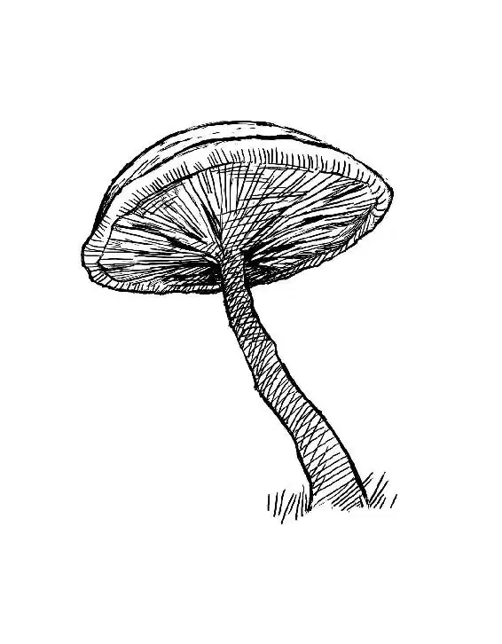

London, 1855 Alice Kingsleigh started awake.
Her heart was pounding. The room around her was dark. The only glimmers of light slipped under the door from the lamps in the hall outside.
She’d had the dream again. It was the same every time.
The tiny nine-year-old pushed back her heavy bedcovers. She shivered as her bare feet hit the cold wooden floor. Sounds echoed from downstairs— the strong, comforting voice of her father and the answering guffaws of his friends in the study.
Pale lace curtains fluttered at her window as Alice pulled open the bedroom door. She crept down the hall, a ghostly figure in her white nightgown. A floorboard creaked underneath her as she passed her mother’s room.
Alice froze, waiting for a stern word to send her back to bed.
Silence. Another roar of laughter from the men downstairs. Either her mother was asleep already— or pretending to be.
As Alice hurried down the long staircase, the smooth wood of the banister felt like polished bronze under her small hands. She stopped in the doorway of the study, transfixed by the sight of her father.
Charles Kingsleigh stood before the window, lit by the glow of firelight. A circle of men sat listening to him, captured by his ardor the way Alice usually was. He spoke passionately of his new grand idea. Alice didn’t understand it, but she knew if her father believed in it, it must be something wonderful.
Peering around the door, she recognized one of the faces in the crowd. It was Lord Ascot, a dour, aristocratic man with none of her father’s energy or life. Lord Ascot’s son, Hamish, was a pasty, stuck-up little boy with no sense of humor. Alice thought he was rather horrible, but she tried to be nice to him. She thought she might be horrible, too, if she had parents like Lord and Lady Ascot.
Instead she had her father, who understood her completely. Alice wrapped her hands around the doorknob and leaned on the solid wooden door, waiting for him to notice her.
“Charles,” said Lord Ascot, “you have finally lost your senses.”
“This venture is impossible,” agreed another man, his mustache twitching.
Charles Kingsleigh smiled a grin that made Alice feel warm inside. How could anyone disagree with him about anything?
“For some,” Alice’s father said. “Gentlemen, the only way to achieve the impossible is to believe it is possible.”
Alice pondered this.
“That kind of thinking could ruin you,” said a man in an ill-fitting black suit, shaking his head.
“I’m willing to take that chance,” Charles said passionately. “Imagine trading posts in Rangoon, Bangkok, Jakarta …”
He waved his arms, imagining the exotic faraway ports, and his gaze drifted across the room and fell on Alice. Immediately he stopped speaking and crossed the room to her. The other men turned and saw the tiny blond child standing at the door in her nightgown. Alice’s father crouched beside her and put his warm hands on her trembling shoulders.
“The nightmare again?” he asked kindly.
Alice nodded, thinking of an immaterial cat and a talking hare. Charles took one of her hands in his and turned to his guests.
“I won’t be long,” he said.
Alice leaned on his shoulder as he carried her up the long staircase. Her mother would have been scandalized if Alice had shown up in the middle of one of her parties. She would have sent her straight back to bed on her own. But Father understood. He always understood, and he was always there for her.
Charles tucked the bedclothes around Alice again and sat down on the bed beside her.
“Tell me about it,” he said, patting her hand. “I’m falling down a dark hole,” Alice said, “and then I see strange creatures… ” She faltered. It all sounded too peculiar to believe, but her father listened with a serious, attentive expression on his face.
“What kind of creatures?” he asked.
“Well, there’s a dodo bird,” said Alice, “a rabbit in a waistcoat, a smiling cat—”
“I didn’t know cats could smile,” her father said.
“Neither did I,” said Alice, but she could see the smiling cat in her head as clear as day, as well as the smile left behind when the rest of the cat disappeared. She shivered. It was so very odd. “Oh, and there’s a blue caterpillar,” she said, remembering the large puffy mushroom it sat on.
“Blue caterpillar,” Charles said gravely. “Hmmm.”
Alice gave him a worried look. “Do you think I’ve gone round the bend?”
Her father felt her forehead, looking just like their family doctor when he was checking for a fever. He made the doctor’s “bad news” face and said, “I’m afraid so.” Alice’s eyes widened, but he went on. “You’re mad. Bonkers. Off your head. But I’ll tell you a secret … all the best people are.”
He grinned at her, and Alice couldn’t help but smile back. She leaned against him with a little sigh.
“It’s only a dream, Alice,” he went on. “Nothing can harm you there. But if you get too frightened, you can always wake up. Like this.” Suddenly he pinched her arm, not very hard, but it made her shriek with surprise. Giggling, she pinched him back, and he laughed, tousling her hair.
“Exactly,” he said. “You see? Nothing to worry about. It’s only a dream.” He kissed her forehead and fluffed the pillows around her as he stood up.
“Thank you, Father,” Alice whispered.
But as she listened to his footsteps going back down the stairs, a shivery feeling ran across her skin.
How could a dream be so very real?
